定州鸿跃五金制品有限公司现有两个厂区，铅网厂、桥南厂均位于定 州市沙河经济开发区，定深路北侧，铅网厂北侧 160m 处为桥南厂。定州 鸿跃五金制品有限公司原名定州市铅网厂，始建于 1998 年，建设 3 条热 镀锌丝生产线，2011 年 6 月 3 日，定州市铅网厂环保审批及验收手续视同 定州鸿跃五金制品有限公司。定州市桥南金属制品有限公司原名定州市桥 南金属制品厂，建设 1 条电镀锌丝生产线，公司由于经营不善，于 2016 年 12 月 31 日采用顶账方式将厂地及环评手续转让给定州鸿跃五金制品有 限公司。此次验收项目为桥南厂年产电镀锌丝 5000 吨项目。
根据《中华人民共和国环境影响评价法》和中华人民共和国国务院 2 53 号令《建设项目环境保护管理条例》中有关规定，定州市桥南金属制品 厂年产 5000 吨镀锌铁丝项目环境影响报告书于 2002 年通过河北省环境保 护局批复，批复文号：冀环管[2002]269 号，并于 2003 年通过保定市环保 局竣工环保验收，验收文号：保环验[2003]053 号，定州市桥南金属制品 有限公司取得排污许可证，编号 PWX-130682-0052。公司由于经营不善， 于 2016 年 12 月 31 日采用顶账方式将厂地及环评手续转让给定州鸿跃五 金制品有限公司。2017 年 9 月，公司委托河北博鳌项目管理有限公司编制 了《定州鸿跃五金制品有限公司技术改造项目环境影响报告书》，定州市 环境保护局以定环书[2017]11 号对该项目提出审批意见。2017 年 12 月， 该项目生产设施和配套的环保设施建设完成并经调试后，企业申请环保验 收。河北中彻环境检测技术有限公司于 2017 年 12 月 22 日~2017 年 12 月 23 日进行了现场监测。
（一）中华人民共和国国务院令第 253 号《建设项目环境保护管理条例》；
（二）中华人民共和国国务院令第 682 号《国务院关于修改〈建设项目环境保 护管理条例〉的决定》；
（三）国家环保总局第 13 号令《建设项目竣工环境保护验收管理办法》；
（四）国家环保总局《建设项目环境保护设施竣工验收监测技术要求（试行）》；
（五）《建设项目竣工环境保护验收技术指南 污染影响类》；
（六）河北博鳌项目管理有限公司《定州鸿跃五金制品有限公司技术改造项目 环境影响报告书》；
（七）定州市环境保护局关于《定州鸿跃五金制品有限公司技术改造项目环境 影响报告书》的审批意见（定环书[2017]11 号）。
1.项目名称： 定州市鸿跃五金制品有限公司技术改造项目
2.项目性质： 技改
3.工程规模： 年产热镀锌丝 3000 吨、电镀锌丝 5000 吨
4.项目投资： 厂区总投资 3618.45 万元，环保投资为 50 万元，厂区环
保投资为占总投资比例为 1.38%。
| 环保设施名称 | 实际投资（万元） | 备注 |
| 废气治理 | 26.8 | ———— |
| 废水治理 | 2 | ———— |
| 固废治理 | 10 | ———— |
| 噪声治理 | 5.2 | ———— |
| 防腐防渗 | 6 | ———— |
| 总投资 | 3618.45 | |
| 环保投资 | 50 | |
| 占总投资比重（%） | 1.38 | |
| 备注 | ———— | |
5.生产组织：该项目劳动定员 70 人，采用三班工作制，每班工作 8 小时，年工 作 300 天。
6.项目由来： 据统计资料显示，随着国民经济的发展，金属丝绳在建筑和包装、 修饰等领域将得到广泛应用。 一些金属丝绳在自然的开放环境使用， 进行防腐、防锈保护可延长其使用寿命，故需对其表面进行表层镀锌保 护处理。镀锌在我国覆盖面很广，是最大的镀种，镀锌产品的需求量也
越来越大。因此定州鸿跃五金制品有限公司投资 3618.45 万元在定州市 沙河经济开发区建设年产热镀锌丝 3000 吨、电镀锌丝 5000 吨项目。
7.地理位置及厂区平面布置：本项目位于位于定州市高蓬镇李辛庄村北 370m 处，定深路北侧 20 5m，厂址地理位置中心坐标为北纬 38°21′26.44″，东经 115°03′1 8.05″。厂区东侧为永伟拔丝厂，南侧为中振金属厂，西侧为村路，北
侧为闲置房。项目周围无国家、省、市规定的重点文物保护单位、风景 名胜区、革命历史古迹、集中式水源地等环境敏感区。具体项目地理位 置图见图 3-1，项目周边关系及厂区平面布置图见图 3-2。
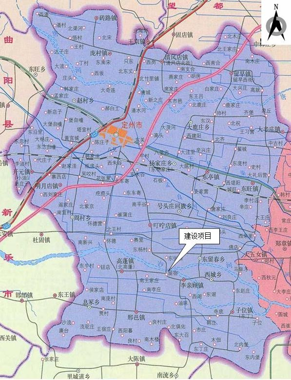图 3-1 项目地理位置图
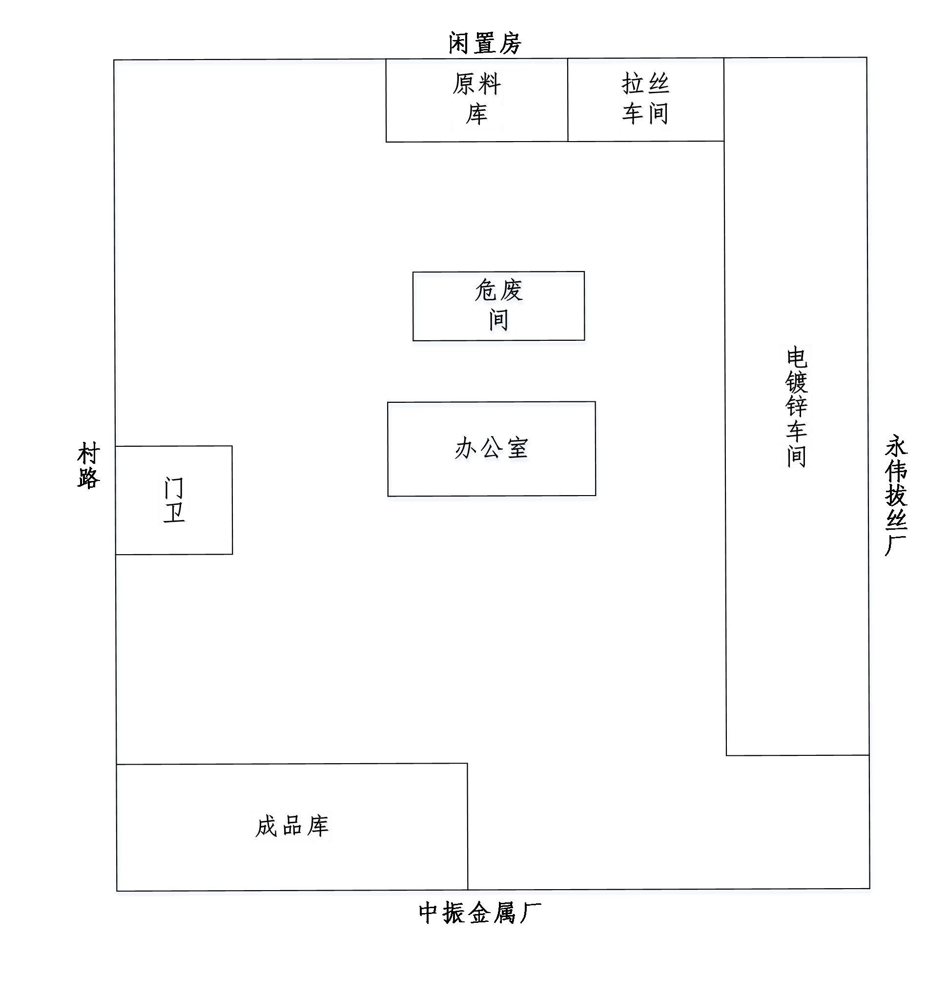图 3-2 项目周边关系及厂区平面布置图
8.项目主要生产设备及环保设施：
定州鸿跃五金制品有限公司年产 5000 吨电镀锌丝项目设备见表 3-1。
| 序号 | 设备名称 | 单位 | 环评数量 | 实际数量 | 备注 |
| 1 | 天然气平炉 | 台 | 1 | 1 | / |
| 2 | 酸洗槽 | 个 | 2 | 2 | / |
| 3 | 水洗槽 | 个 | 4 | 4 | / |
| 4 | 镀槽 | 个 | 12 | 8 | 另外4台用于热镀线 |
| 5 | 循环泵 | 个 | 12 | 12 | / |
| 6 | 烘干机 | 个 | 2 | 2 | / |
| 7 | 收线机 | 个 | 1 | 1 | / |
| 8 | 整流器 | 个 | 8 | 8 | / |
| 9 | 盐酸储罐 | 个 | 2 | 1 | 另外1台用于热镀线 |
| 10 | 液化天然气储罐 | 个 | 1 | 1 | / |
| 11 | 变压器 | 个 | 1 | 1 | / |
| 12 | 酸雾洗涤塔 | 个 | 1 | 1 | / |
| 13 | 大车拔丝机 | 台 | 13 | 13 | / |
| 14 | 水幕吸收装置 | 套 | 1 | 1 | / |
| 15 | 酸雾洗涤塔 | 套 | 1 | 1 | / |
工艺简述：将原料盘条利用拉丝机加工成符合规格要求的金属丝，经拉丝 机拉出的铁丝直接进入平炉，金属丝经风冷、水冷后降温冷却。将金属丝等金 属制品浸入盐酸等的水溶液进行酸洗，酸洗后对金属丝进行电镀操作，镀锌完 成后用新鲜水对镀锌丝进行水洗，然后利用天然气平炉烟气的余热烘干，之后 经收线机收卷成盘，经外协制网后检验合格包装入库待售。工艺流程见图 3-4。
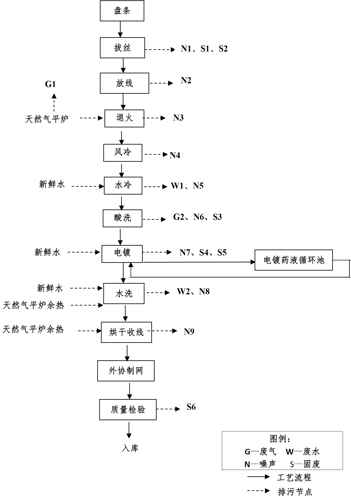图 3-4 工艺流程图
该项目产生的废气主要为电镀线天然气平炉废气及电镀线酸洗工序盐酸 雾。其主要污染物见表 3-2。
| 序号 | 主要污染因子 | 产生工序 | 排放方式 | 处理措施及去向 |
| 1 | 颗粒物 | 电镀线天然气平炉 | 间断 | 清洁能源天然气+15m 高排气筒 |
| SO 2 | ||||
| NO x | ||||
| 2 | 盐酸雾 | 电镀线酸洗工序 | 间断 | 酸洗线密闭，盐酸液表面采用高效酸雾抑制剂，酸洗线两端安装水幕吸收装置+酸雾洗涤塔+15m 高排气筒 |
该项目废水主要为生产废水和生活污水，生产废水主要包括水幕循环水、冷却洗涤溢流水、酸洗后水洗废水以及车间地面冲洗废水。
| 序号 | 主要污染因子 | 产生工序 | 排放方式 | 处理措施及去向 |
| 1 | pH | 生活污水、水幕 循环水、冷却洗 涤溢流水、酸洗 后水洗废水以及 车间地面冲 | 间断 | 酸洗槽、镀槽周边设置集水槽。生产 废水通过污水收集池后与经化粪池 处理的生活污水排入高蓬镇污水处 理厂 |
| COD | ||||
| 氨氮 | ||||
| SS | ||||
| BOD 5 | ||||
| 总锌 | ||||
| 总铁 |
该项目主要噪声源为拔丝机、收线机、风机及泵类等设备机械噪声，噪声 通过采用厂房隔声、基础减振等降噪措施后排放。
该项目固体废物主要是废酸、锌渣和锌灰、阴极泥和电镀废渣、原料废包 装桶（袋）、下脚料、残次品及生活垃圾。废酸、锌渣和锌灰、阴极泥和电镀 废渣、原料废包装桶（袋）在危废暂存间内使用专用密闭容器分开储存；下脚 料、残次品作为废品外售；生活垃圾由环卫部门运至指定地点集中处理。
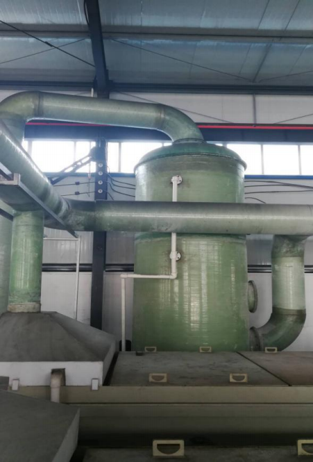酸雾洗涤塔
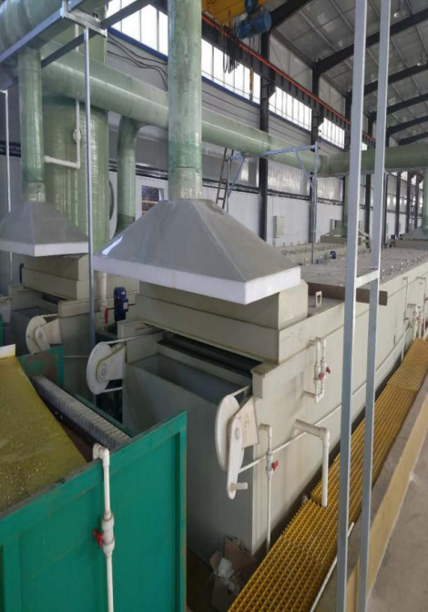水幕吸收装置
| 项目 | 污染源 | 环保措施 | 验收标准 | 落实情况 |
| 废气 | 电镀线天然气 平炉废气 | 清洁能源天然气+15m 高排气筒 | 满足《工业炉窑大气污 染物排放标准》 （DB13/1640-2012）表 1、表 2 新建工业炉窑 标准 | 已落实 |
| 电镀线酸洗工序 | 酸洗线密闭，盐酸液表面采用高效酸雾抑制剂，酸洗线两端安装 水幕吸收装置+酸雾吸收 | 《电镀污染物排放标 准》（GB21900-2008） 表 5 | 已落实 | |
| 废水 | 酸洗槽、镀槽 废水、生产废 水及生活污水 | 酸洗槽、镀槽周边设置集水槽。 废水能够采用明渠的必须采用 明渠收集和排放；生产废水通过 污水收集池后与经化粪池处理 的生活污水排入高蓬镇污水处 理厂 | 满足定州市高蓬镇污 水处理厂进水水质要 求 | 已落实 |
| 厂界噪声 | 设备噪声 | 采用厂房隔声、基础减振等降噪 措施 | 《工业企业厂界环境 噪声排放标准》（GB 12348-2008） 3 类标准 | 已落实 |
| 环评要求 | 实际落实情况 | |
| 1 | 该项目位于定州市高蓬镇李辛庄村北 370m 处， 总投资 3618.45 万元，其中环保投资 50 万元。 占地面积为 22573.45m2，主要建设拔丝车间、 镀锌车间、危废暂存间、成品库等。年产热镀锌丝 3000 吨、电镀锌丝 5000吨。 | 已落实，本项目建设地点、总投资、环保投资、 占地面积、建设内容及生产规模与环评要求一 致。 |
| 2 | 该项目废水主要为生产废水和生活污水，生产废 水主要包括水幕循环水达到一定酸度外排、冷却 洗涤溢流水、酸洗后水洗废水以及车间地面冲洗 废水。生产废水与职工盥洗废水水质达到定州市 高蓬镇污水处理厂进水水质要求。 | 已落实，生产废水通过污水收集池后与经化粪池 处理的生活污水排入高蓬镇污水处理厂，满足定 州市高蓬镇污水处理厂进水水质要求。 |
| 3 | 该项目产生的废气主要为电镀线天然气平炉废 气及电镀线、热镀线酸洗工序盐酸雾。电镀线酸 洗工序通过酸洗线密闭，盐酸液表面采用高效酸 雾抑制剂，酸洗线两端安装水幕吸收装置+酸雾 洗涤塔+15m 高排气筒，废气排放满足《电镀污 染物排放标准》（GB21900-2008）表5 排放标 准。 | 已落实，电镀线酸洗工序通过酸洗线密闭，盐酸 液表面采用高效酸雾抑制剂，酸洗线两端安装水 幕吸收装置+酸雾洗涤塔+15m 高排气筒，废气 排放满足《电镀污染物排放标准》 （GB21900-2008）表 5 排放标准 |
| 4 | 该项目固体废物主要是废酸、锌渣和锌灰、阴极 泥和电镀废渣、原料废包装桶（袋）、下脚料、 残次品及生活垃圾。废酸、锌渣和锌灰、阴极泥 和电镀废渣、原料废包装桶（袋）在危废暂存间 内使用专用密闭容器分开储存；下脚料、残次品 作为废品外售；生活垃圾由环卫部门运至指定地点集中处理。 | 已落实，废酸、锌渣和锌灰、阴极泥和电镀废渣、 原料废包装桶（袋）在危废暂存间内使用专用密 闭容器分开储存；下脚料、残次品作为废品外售； 生活垃圾由环卫部门运至指定地点集中处理。 |
| 5 | 该项目主要噪声源为拔丝机、收线机、风机及泵 类等设备机械噪声，噪声通过采用厂房隔声、基 础减振等降噪措施后，厂界噪声满足《工业企业 厂界环境噪声排放标准》（GB12348-2008）3 类标准要求。 | 已落实，噪声通过采用厂房隔声、基础减振等降 噪措施后，厂界噪声满足《工业企业厂界环境噪 声排放标准》（GB12348-2008）3 类标准要求。 |
| 6 | 该厂总量控制指标为 SO 2 1.392 t/a、NO x 1.392 t/a；COD 2.241 t/a、NH 3-N 0.236 t/a。 | 该项目排放总量为 SO 2 0.263 t/a，NO X 0.579 t/a； COD 0.324 t/a，NH 3-N 0.013 t/a |
| 环评批复要求 | 实际落实情况 | |
| 1 | ———— | 本项目建设地点、总投资、环保投资、占地面积、 建设内容及生产规模与环评要求一致。 |
| 2 | 项目生产废水全部收集后排入区域集中工业 污水处理厂（定州市高蓬镇污水处理厂） | 已落实，生产废水通过污水收集池后与经化粪池处 理的生活污水排入高蓬镇污水处理厂，满足定州市 高蓬镇污水处理厂进水水质要求。 |
| 3 | ———— | 电镀线酸洗工序通过酸洗线密闭，盐酸液表面采用 高效酸雾抑制剂，酸洗线两端安装水幕吸收装置+ 酸雾洗涤塔+15m 高排气筒，废气排放满足《电镀 污染物排放标准》（GB21900-2008）表 5 排放标 准 |
| 4 | 对于生产中产生的废酸、锌渣、锌灰、阳极泥 和电镀废渣等危险废物，规范危废暂存库的建 设，正式投产以前签订危险废物处置协议，确 保危险废物合理处置 | 已落实，废酸、锌渣和锌灰、阴极泥和电镀废渣、 原料废包装桶（袋）在危废暂存间内使用专用密闭 容器分开储存；下脚料、残次品作为废品外售；生 活垃圾由环卫部门运至指定地点集中处理。 |
| 5 | ———— | 噪声通过采用厂房隔声、基础减振等降噪措施后， 厂界噪声满足《工业企业厂界环境噪声排放标准》 （GB12348-2008）3 类标准要求。 |
| 6 | ———— | 该项目排放总量为 SO2 0.263t/a，NOX 0.579t/a； COD 0.324t/a，NH3-N 0.013t/a |
盐酸雾排放执行《电镀污染物排放标准》（GB21900-2008）表 5 排放标准，具体标准值见表 5-1。
| 污染物名称 | 有组织排放标准限值（mg/m 3） |
| 盐酸雾 | 30 |
| 污染物名称 | 定州市高蓬镇污水处理厂进水水质要求 | 执行标准 |
| pH | 3~5 | 3~5 |
| COD（mg/L） | 380 | 380 |
| 氨氮（mg/L） | 40 | 40 |
| SS（mg/L） | 200 | 200 |
| BOD 5（mg/L） | 250 | 250 |
| 总锌（mg/L） | 150 | 150 |
| 总铁（mg/L） | 165 | 165 |
厂界噪声执行《工业企业厂界环境噪声排放标准》（GB 12348-2008）3 类 区标准，噪声标准限值见表 5-3。
| 检测对象 | 项目 | 单位 | 限值 | 引用标准 |
| 东、南、西、北 厂界 | 等效 A 声级 | dB(A) | 65（昼间） | 《工业企业厂界环境噪声排放标 准》（GB 12348-2008）3 类区标准 |
| 55（夜间） |
在验收监测期间，记录生产负荷。在生产负荷达到 75%以上条件下进行现 场采样，以保证监测数据的有效性和准确性。
废气监测内容及频次见表 6-1。
| 序号 | 监测内容 | 污染物名称 | 监测点位 | 监测频次 |
| 1 | 有组织废气 | 颗粒物 | 燃气平炉排气筒出口 | 监测 2 天，每天 3 次 |
| SO 2 | ||||
| NO X | ||||
| 盐酸雾 | 电镀线酸洗工序排气筒出口 | |||
| 2 | 无组织废气 | HCl | 厂界下风向A、B、C | 监测 2 天，每天 3 次 |
废水监测内容及频次见表 6-2。
| 序号 | 监测内容 | 污染物名称 | 监测点位 | 监测频次 |
| 1 | 废水 | pH | 废水总排口 | 监测 2 天，每天 4 次 |
| 化学需氧量（COD） | ||||
| 生化需氧量（BOD） | ||||
| 悬浮物 | ||||
| 氨氮 | ||||
| 铁 | ||||
| 锌 |
厂界四周布设 4 个监测点位，东侧、南侧、西侧、北侧各设一个监测点位， 在厂界围墙外 1m 处，传声器位置高于墙体并指向声源处，频次为监测 2 天， 昼间夜间各 1 次。噪声监测内容见表 6-3。
| 监测对象 | 监测点位 | 监测频次 |
| 厂界噪声 | 厂界东侧、南侧、西侧、北侧各设一个监测点位 | 监测 2 天，昼间夜间各 1 次 |
| 废气监测分析方法及仪器情况表 | ||||
| 序号 | 项目 | 分析方法及国标代号 | 仪器名称、编号 | 检出限 |
| 1 | 颗粒物 | 物固定污染源排气中颗粒物测定与气态污染物采样方法 GB/T 16157-1996 | 电子天平 FA2004、 HBZC-010 | ———— |
| 2 | 二氧化硫 | 固定污染源排气中二氧化硫的测定定电位电解法 HJ/T 57-2000 | 自动烟尘（气）测试仪崂 应 3012H、HBZC-013（2） | 2.86mg/m 3 |
| 3 | 氮氧化物 | 固定污染源废气 氮氧化物的测定 定电位电 解法 HJ 693-2014 | 自动烟尘（气）测试仪崂 应 3012H、HBZC-013（2） | 3mg/m 3 |
| 4 | 氯化氢 | 固定污染源排气中氯化氢的测定 硫氰酸汞 分光光度法 HJ/T27-1999 | 分光光度计 SP-721E、 HBZC-019 | 0.9mg/m 3 |
| 5 | 氯化氢（无组织） | 固定污染源排气中氯化氢的测定 硫氰酸汞 分光光度法 HJ/T27-1999 | 分光光度计 SP-721E、 HBZC-019 | 0.05mg/m 3 |
| 厂界噪声监测分析方法及仪器情况表 | ||||
| 序号 | 项目 | 分析方法 | 仪器名称、编号 | 检出限 |
| 1 | 厂界噪声 | 工业企业厂界环境噪声排放标准 GB 12348-2008 | 多功能声级计 AWA5680、HBZC-005 | ———— |
| 废水监测分析方法及仪器情况表 | ||||
| 序号 | 项目 | 分析方法及国标代号 | 仪器名称、编号 | 检出限 |
| 1 | 铁 | 水质铁、锰的测定 火焰原子吸收分光光度法 GB/T11911-1989 | 原子吸收分光光度计、 AA-7001、HBZC-022 | 0.03mg/L |
| 2 | 悬浮物 | 水质 悬浮物的测定 重量法 GB/T11901-1989 | 电子天平 FA-2004、 HBZC-010 | ———— |
| 3 | 化学需氧量 （COD） | 水质化学需氧量的测定 重铬盐酸法 HJ828-2017 | ———— | 4mg/L |
| 4 | 锌 | 水质 铜、锌、铅、镉的测定 原子吸收分光 光度法 GB/T7475-4987 | 原子吸收分光光度计、 AA-7001、HBZC-022 | 0.05mg/L |
| 5 | 氨氮 | 水质氨氮的测定 纳氏试剂分光光度法 HJ535-2009 | 分光光度计 SP-721E、 HBZC-019 | 0.025mg/L |
| 6 | 五日生化需 氧量 （BOD 5） | 水质五日生化需氧量（BOD5）的测定 稀释 与接种法 HJ505-2009 | 生化培养箱 LRH-150F、 HBZC-011 | 0.5mg/L |
| 7 | pH | 水质 pH 值的测定 玻璃电极法 GB/T 6920-1986 | pH 计 pHS-3C、 HBZC-018 | ———— |
污染源现场监测过程严格《固定污染源监测质量保证与质量控制技术规范 （试行）》（HJ/T373-2007）、《环境监测技术规范》中质量控制与质量保证 有关章节要求进行。具体指控措施如下：
（1）本项目监测期间正常生产，生产负荷达 75.0%以上且运行稳定，各污 染治理设施运行基本正常。
（2）合理布设监测点位，保证各监测点位布设的科学性、代表性和可比性。
（3）废气及废水监测的质量保证按照相关技术规范的要求进行全过程质 量控制。废气监测前对使用的仪器均进行了流量校准，分析过程严格按照有关 监测方法执行。
（4）噪声监测按照《工业企业厂界环境噪声排放标准》（GB12348-2008） 有关要求，仪器在正常条件下进行监测。噪声分析仪监测前、后经噪声标准仪 进行了校准，且校准合格。
（5）监测分析方法采用国家颁布标准分析方法，监测人员持证上岗，监测 仪器经河北省计量监督检测院检定并在有效期内。
（6）监测数据及监测报告严格执行三级审核制度。
现场监测期间，操作间正常运行，满足 75%以上的工况要求。详细 见表 8-1。
| 序号 | 产品名称 | 监测期间产量 | |||||
| 2017-12-22 | 2017-12-23 | 折算年产量 | |||||
| 产量 | 负荷 | 产量 | 负荷 | 产量 | 负荷 | ||
| 1 | 电镀锌丝 | 13t | 78% | 14t | 84% | 4050t | 81% |
| 监测点位及时间 | 监测项目 | 单位 | 监测结果 | 执行标准号及标准值 | 达标情况 | |||
| 1 | 2 | 3 | 均值 | |||||
| 燃气平炉 排气筒 高 15 米 2017.12.22 （年运行 7200h） | 标干流量 | Nm 3/h | 1079 | 1123 | 1029 | 1077 | ———— | ———— |
| 烟气含氧量 | % | 5.8 | 5.9 | 5.7 | ———— | ———— | ———— | |
| 空气过剩系数 | ———— | 1.38 | 1.39 | 1.37 | ———— | ———— | ———— | |
| 烟尘浓度 | mg/Nm 3 | 10 | 8 | 13 | 10 | DB13/1640-2012 | ———— | |
| 烟尘折算浓度 | mg/Nm 3 | 8 | 7 | 10 | ———— | ≤50 | 达标 | |
| 二氧化硫浓度 | mg/Nm 3 | 33 | 30 | 35 | 33 | DB13/1640-2012 | ———— | |
| 二氧化硫折算浓度 | mg/Nm 3 | 27 | 25 | 28 | ———— | ≤400 | 达标 | |
| 氮氧化物浓度 | mg/Nm 3 | 72 | 76 | 74 | 74 | DB13/1640-2012 | ———— | |
| 氮氧化物折算浓度 | mg/Nm 3 | 59 | 62 | 60 | ———— | ≤400 | 达标 | |
| 燃气平炉 排气筒 高 15 米 2017.12.22 （年运行 7200h） | 标干流量 | Nm 3/h | 1121 | 1026 | 1204 | 1117 | ———— | ———— |
| 烟气含氧量 | % | 6.1 | 6.0 | 5.8 | ———— | ———— | ———— | |
| 空气过剩系数 | ———— | 1.41 | 1.40 | 1.38 | ———— | ———— | ———— | |
| 烟尘浓度 | mg/Nm 3 | 9 | 11 | 7 | 9 | DB13/1640-2012 | ———— | |
| 烟尘折算浓度 | mg/Nm 3 | 7 | 9 | 6 | ———— | ≤50 | 达标 | |
| 二氧化硫浓度 | mg/Nm 3 | 32 | 36 | 34 | 34 | DB13/1640-2012 | ———— | |
| 二氧化硫折算浓度 | mg/Nm 3 | 27 | 30 | 28 | ———— | ≤400 | 达标 | |
| 氮氧化物浓度 | mg/Nm 3 | 70 | 73 | 75 | 73 | DB13/1640-2012 | ———— | |
| 氮氧化物折算浓度 | mg/Nm 3 | 58 | 60 | 61 | ———— | ≤400 | 达标 | |
| 电镀线酸洗工序 排气筒 高 15 米 2017.12.22 （年运行 7200h） | 标干流量 | Nm 3/h | 9886 | 9814 | 9723 | 9808 | GB21900-2008 | ———— |
| HCl 浓度 | mg/Nm 3 | 1.58 | 1.52 | 1.49 | 1.53 | ≤30 | 达标 | |
| 电镀线酸洗工序 排气筒 高 15 米 2017.12.23 （年运行 7200h） | 标干流量 | Nm 3/h | 9215 | 9306 | 9128 | 9216 | GB21900-2008 | ———— |
| HCl 浓度 | mg/Nm 3 | 1.50 | 1.53 | 1.47 | 1.50 | ≤30 | 达标 | |
| 排放总量 | 排气量 | 万 Nm 3/a | 7638 | |||||
| 烟尘 | t/a | 0.076 | ||||||
| 二氧化硫 | t/a | 0.263 | ||||||
| 氮氧化物 | t/a | 0.579 | ||||||
| HCl | t/a | 0.104 | ||||||
注 ： 监 测 数 据 均 引 自 河 北 中 彻 环 境 检 测 技 术 有 限 公 司 （ 2017） 中 彻 （ 环 监 验 ） 字 12212 号 报 告 。
| 监测项目及时间 | 监测点位 | 单位 | 监测结果 | 执行标准号及标准值 | 达标情况 | |||
| 1 | 2 | 3 | 最大值 | |||||
| HCl
2017.12.22 |
厂界下风向 A | mg/Nm 3 | ND | ND | ND | ND | GB16297-1996
≤0.2 |
达标 |
| 厂界下风向 B | mg/Nm 3 | ND | ND | ND | 达标 | |||
| 厂界下风向 C | mg/Nm 3 | ND | ND | ND | 达标 | |||
| HCl
2017.12.23 |
厂界下风向 A | mg/Nm 3 | ND | ND | ND | ND | GB16297-1996
≤0.2 |
达标 |
| 厂界下风向 B | mg/Nm 3 | ND | ND | ND | 达标 | |||
| 厂界下风向 C | mg/Nm 3 | ND | ND | ND | 达标 | |||
注 ： 监 测 数 据 均 引 自 河 北 中 彻 环 境 检 测 技 术 有 限 公 司 （ 2017） 中 彻（ 环 监 验 ） 字 12212 号 报 告 。
| 监测点位 | 2017.12.22 | 2017.12.23 | 排放限值
dB(A) |
达标情况 | 执行标准 | ||
| 昼间 dB(A) | 夜间 dB(A) | 昼间 dB(A) | 夜间 dB(A) | ||||
| 北厂界 | 59.6 | 50.3 | 58.7 | 49.6 | 昼间：≤65
夜间：≤55 |
达标 | 《工业企业厂界环 境噪声排放标准》 （GB 12348-2008） 3 类标准 |
| 东厂界 | 61.2 | 52.0 | 60.8 | 51.4 | 达标 | ||
| 西厂界 | 62.4 | 53.7 | 61.9 | 52.8 | 达标 | ||
| 南厂界 | 60.2 | 51.2 | 59.8 | 50.7 | 达标 | ||
注 ： 监 测 数 据 均 引 自 河 北 中 彻 环 境 检 测 技 术 有 限 公 司 （ 2017） 中 彻 （ 环 监 验 ） 字 12212 号 报 告 。
| 监测点位 | 检测项目 | 单位 | 监测结果 | 执行标准号及标 准值定州市高蓬 镇污水处理厂进 水水质要求。 | 达标情况 | ||||
| 1 | 2 | 3 | 4 | 平均值 | |||||
| 废水总排口
2017.12.22 |
排水量 | m³/d | 20 | ||||||
| 化学需氧量（COD） | mg/L | 55 | 52 | 50 | 57 | 54 | ≤380 | 达标 | |
| 五日生化 需氧量 （BOD） | mg/L | 17.1 | 16.1 | 15.5 | 17.7 | 16.7 | ≤250 | 达标 | |
| 铁 | mg/L | 13.5 | 12.9 | 14.1 | 14.6 | 13.8 | ≤165 | 达标 | |
| pH | 无量纲 | 4.16 | 4.23 | 4.19 | 4.25 | 4.21 | 3-5 | 达标 | |
| 锌 | mg/L | 131 | 128 | 126 | 121 | 127 | ≤150 | 达标 | |
| 悬浮物 | mg/L | 81 | 78 | 75 | 83 | 79 | ≤200 | 达标 | |
| 氨氮 | mg/L | 2.01 | 2.06 | 2.13 | 2.2 | 2.10 | ≤40 | 达标 | |
| 废水总排口
2017.12.23 |
排水量 | m³/d | 20 | ||||||
| 化学需氧量（COD） | mg/L | 54 | 58 | 50 | 56 | 55 | ≤380 | 达标 | |
| 五日生化 需氧量 （BOD） | mg/L | 16.7 | 18.0 | 15.5 | 17.4 | 17.1 | ≤250 | 达标 | |
| 铁 | mg/L | 13.1 | 12.5 | 14.3 | 12.6 | 13.0 | ≤165 | 达标 | |
| pH | 无量纲 | 4.11 | 4.06 | 4.12 | 4.23 | 4.13 | 3-5 | 达标 | |
| 锌 | mg/L | 127 | 135 | 137 | 129 | 132 | ≤150 | 达标 | |
| 悬浮物 | mg/L | 76 | 85 | 82 | 84 | 82 | ≤200 | 达标 | |
| 氨氮 | mg/L | 2.11 | 2.15 | 2.08 | 2.14 | 2.12 | ≤40 | 达标 | |
| 排放总量 | 排水总量 | 万 t/a | 0.600 | ||||||
| 化学需氧量（COD） | t/a | 0.324 | |||||||
| 氨氮 | t/a | 0.013 | |||||||
| 备注 | 年运行 300 天 | ||||||||
注 ： 监 测 数 据 均 引 自 河 北 中 彻 环 境 检 测 技 术 有 限 公 司 （ 2017） 中 彻 环 监 验 ） 字 12212 号 报 告 。
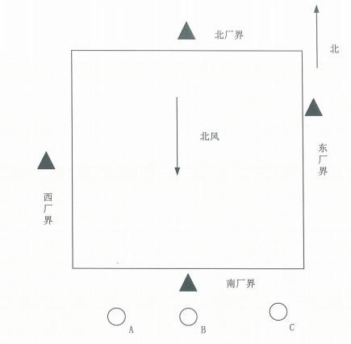
该项目排放总量为 SO 2 0.263t/a，NO X 0.579t/a；COD 0.324t/a，NH 3-N0.013t/a。
验收监测期间，工况达到 75.0%以上，符合相关要求，监测结果具有代表性。
监测期间平炉排气筒外排废气中烟尘最大折算浓度为 10mg/Nm3，二氧化硫 最大折算浓度为 30mg/Nm3 ,氮氧化物最大折算浓度为 62mg/Nm3，满足《工业炉 窑大气污染物排放标准》（DB13/1640-2012）中表 1 和表 2 标准。电镀线酸洗 工序产生的 HCl 最大浓度为 1.58mg/Nm3，满足《电镀污染物排放标准》 （GB21900-2008）表 5 标准。无组织排放废气中 HCl 未检出，满足《大气污染 物综合排放标准》（GB16297-1996）表 2 标准。
废水总排口中化学需氧量（COD）最大浓度为 58mg/L,生化需氧量（BOD） 最大浓度为 18.0mg/L，氨氮最大浓度为 2.19mg/L，悬浮物最大浓度为 85mg/L， 铁最大浓度为 14.6mg/L，锌最大浓度为 137mg/L，pH 为 4.06-4.25，满足定州 市高蓬镇污水处理厂进水水质要求。
该项目厂界噪声昼间最大值 62.4dB(A)，夜间最大值 53.7dB(A)，满足《工业 企业厂界环境噪声排放标准》（GB 12348-2008）3 类功能区标准。
该项目总量为 SO20.263t/a，NOX0.579t/a；COD0.324t/a，氨氮 0.013t/a。
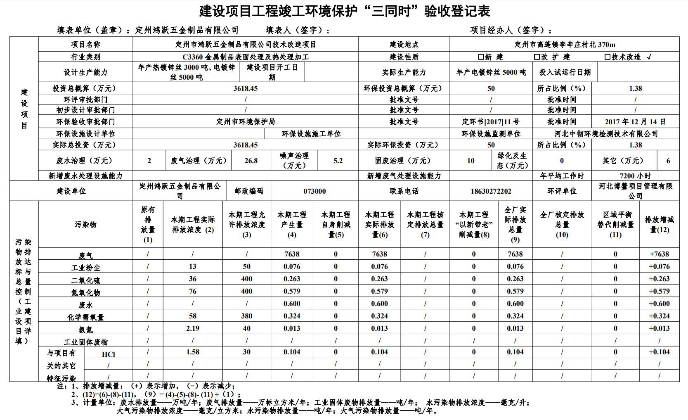
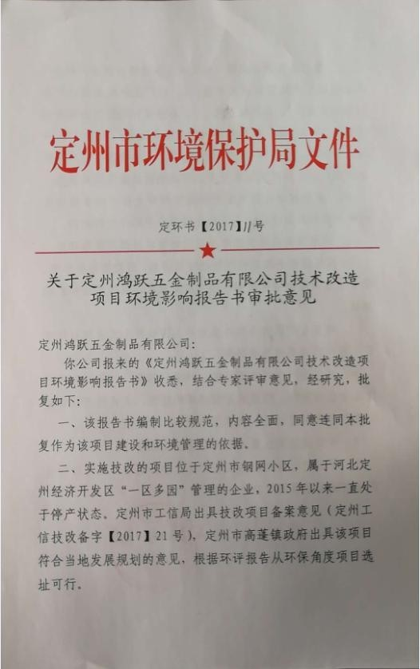
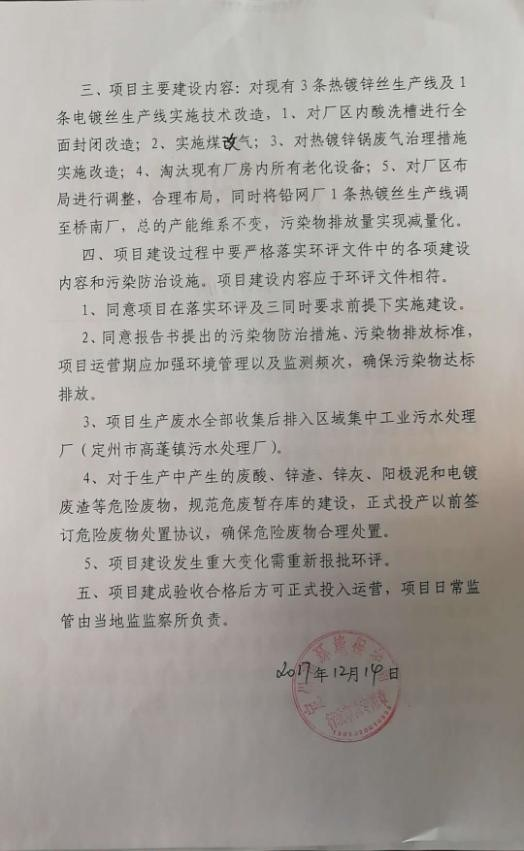
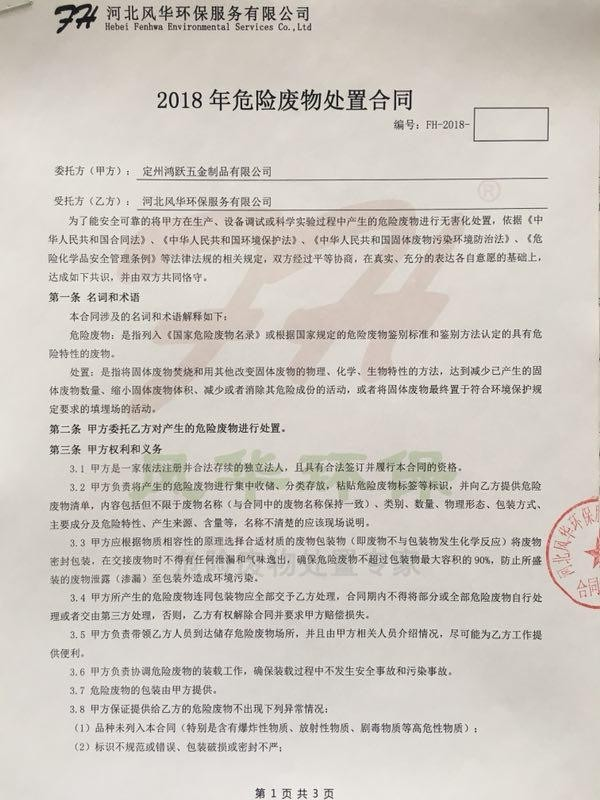
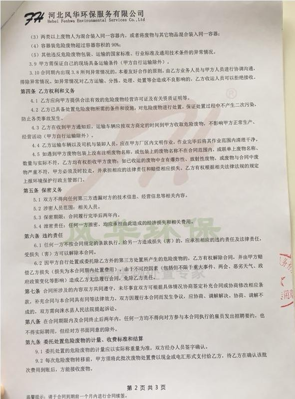
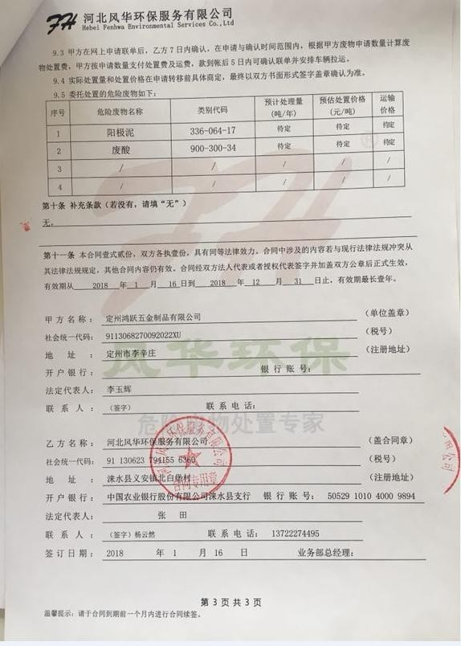
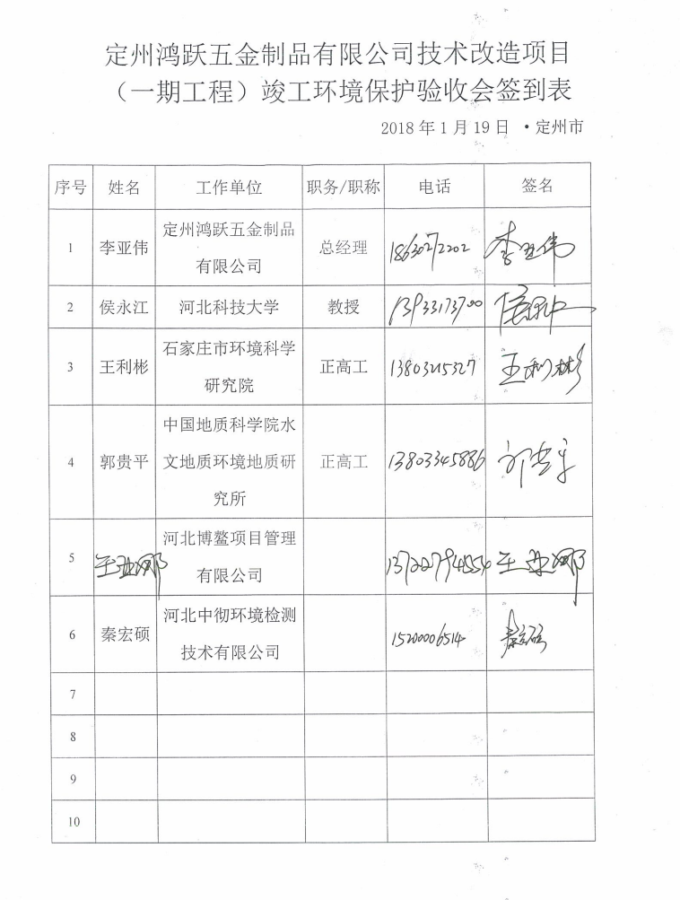
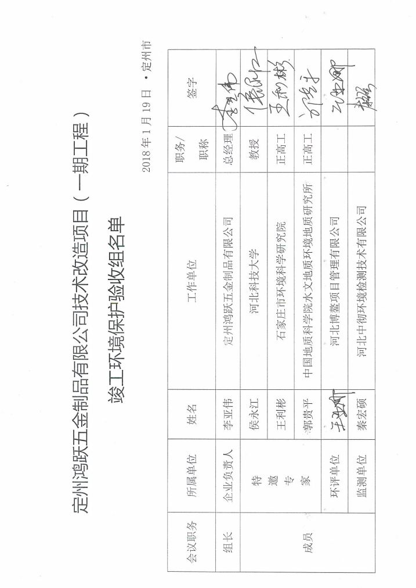
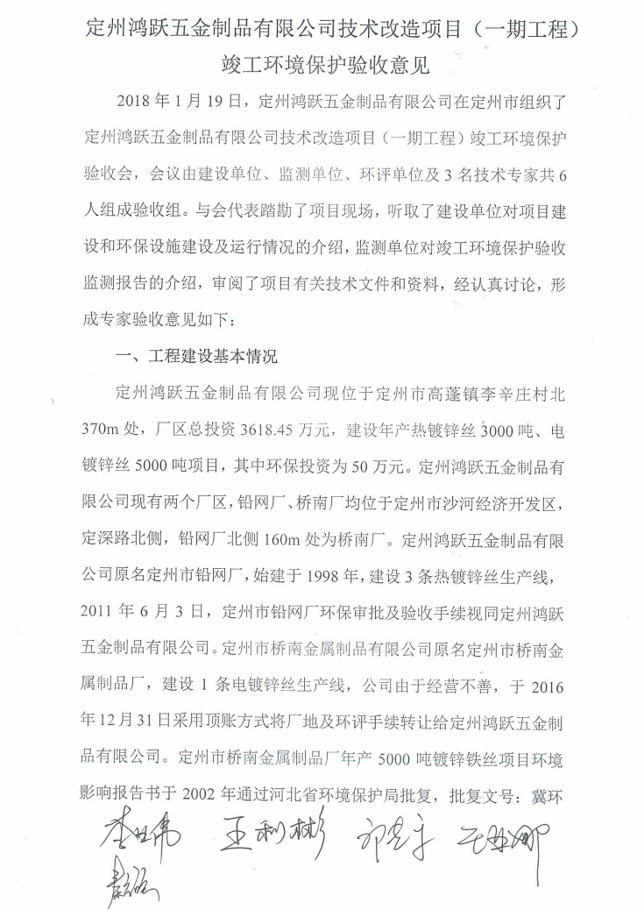
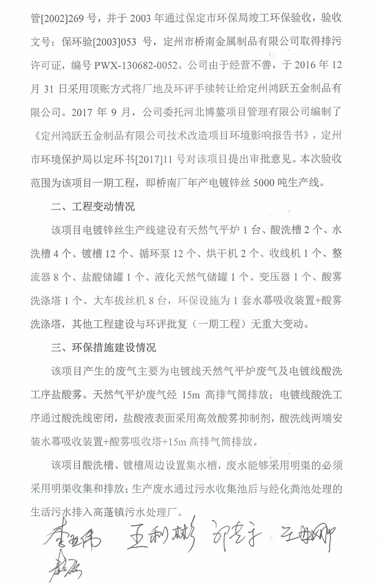
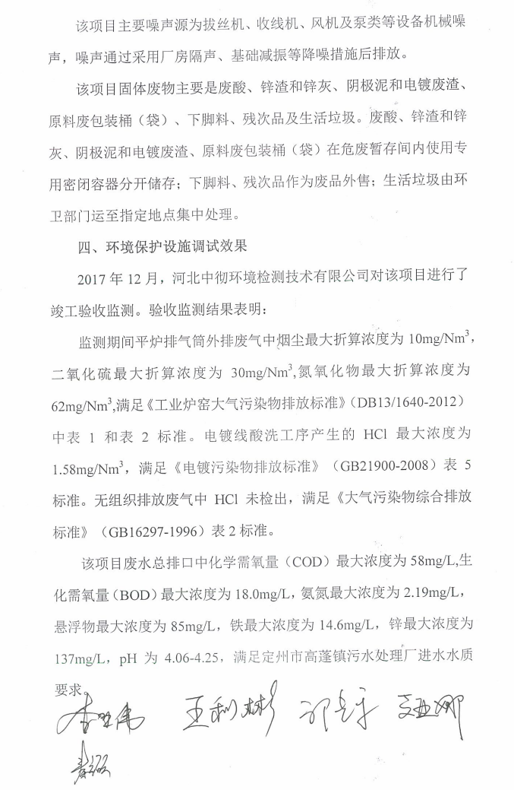
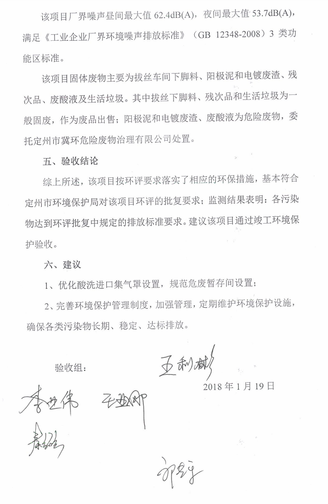